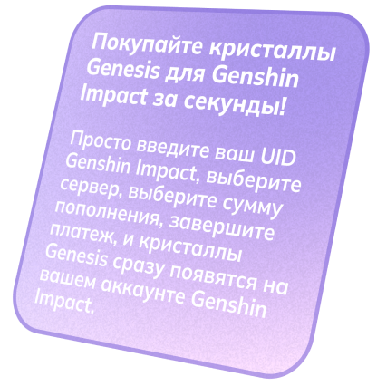

Обратите внимание, что поддерживаются только пополнения для Android, iOS и PC. По любым вопросам не стесняйтесь обращаться в нашу службу поддержки.
Бонус за первое пополнение
Если ваш персонаж в игре никогда не пополнял счет через игру или любую платформу, вы можете:
- Пополнить на 60 кристаллов Genesis, чтобы получить 120 кристаллов Genesis;
- Пополнить на 300+30 кристаллов Genesis, чтобы получить 600 кристаллов Genesis;
- Пополнить на 980+110 кристаллов Genesis, чтобы получить 1,960 кристаллов Genesis;
- Пополнить на 1,980+260 кристаллов Genesis, чтобы получить 3,960 кристаллов Genesis;
- Пополнить на 3,280+600 кристаллов Genesis, чтобы получить 6,560 кристаллов Genesis;
- Пополнить на 6,480+1,600 кристаллов Genesis, чтобы получить 12,960 кристаллов Genesis.
Бонусный подарок
Если ваш персонаж в игре уже пополнял счет через игру или любую платформу, вы можете:
- Пополнить на 60 кристаллов Genesis, чтобы получить 120 кристаллов Genesis;
- Пополнить на 300+30 кристаллов Genesis, чтобы получить 600 кристаллов Genesis;
- Пополнить на 980+110 кристаллов Genesis, чтобы получить 1,960 кристаллов Genesis;
- Пополнить на 1,980+260 кристаллов Genesis, чтобы получить 3,960 кристаллов Genesis;
- Пополнить на 3,280+600 кристаллов Genesis, чтобы получить 6,560 кристаллов Genesis;
- Пополнить на 6,480+1,600 кристаллов Genesis, чтобы получить 12,960 кристаллов Genesis.
Благословение лунного светила
Каждый раз, когда вы покупаете Благословение лунного светила, вы сразу получаете 300 кристаллов Genesis и 30 дней благословения.В течение этих 30 дней вы можете получать 90 примогемов каждый день при входе в систему.
Важные моменты:
- Срок действия Благословения лунного светила можно продлить, только если оставшийся срок составляет 180 дней или меньше.
- Вы не можете приобрести дополнительное благословение, если оставшийся срок превышает 180 дней. Если в уникальных обстоятельствах произойдет повторная покупка, срок не будет продлен, а вам будет возвращено 330 кристаллов Genesis.
- Возврат средств за неиспользованные примогемы, не забранные при входе в систему во время действия благословения, не производится.
- Путешественники с рангом приключений ниже 5 временно не могут видеть количество оставшихся дней их Благословения лунного светила.
